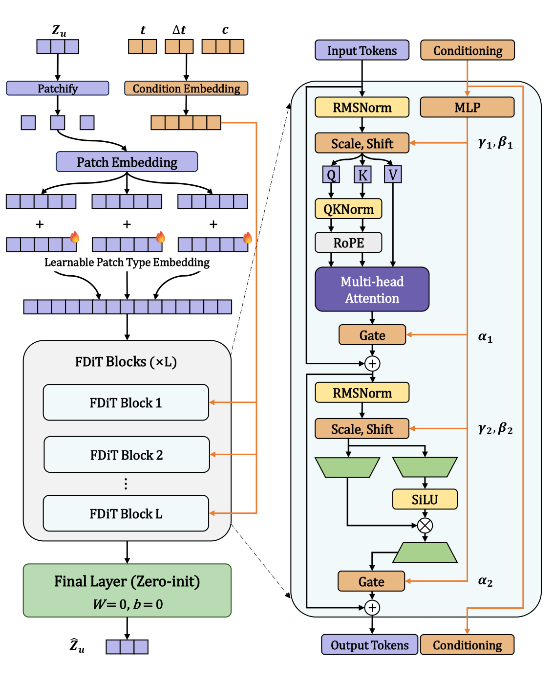
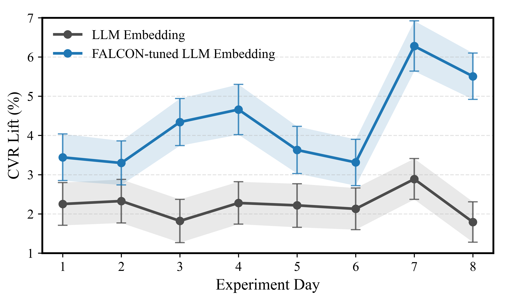
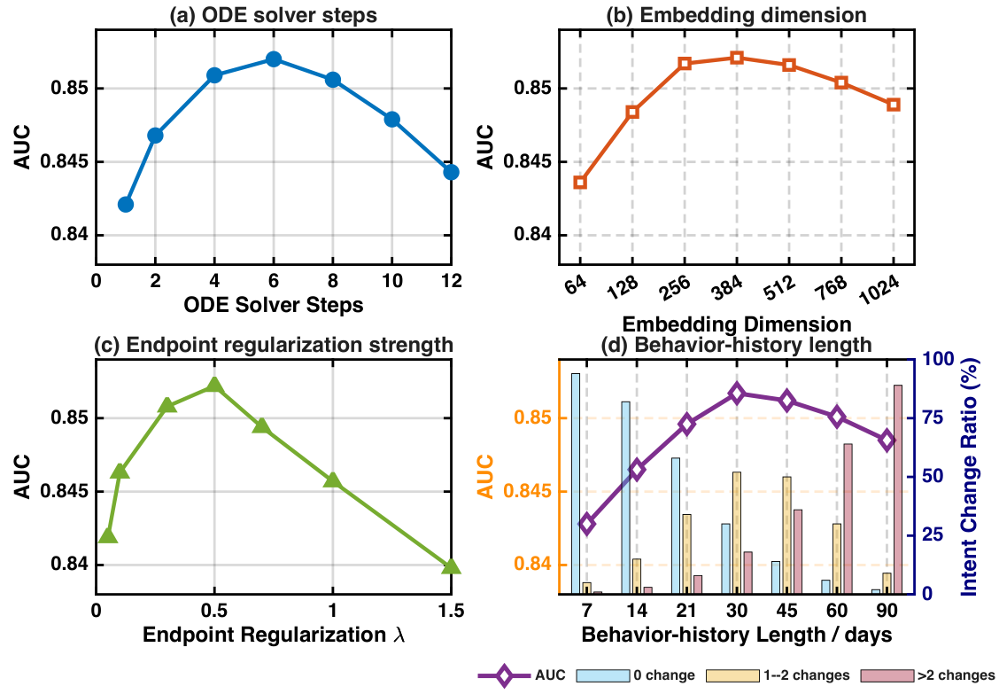
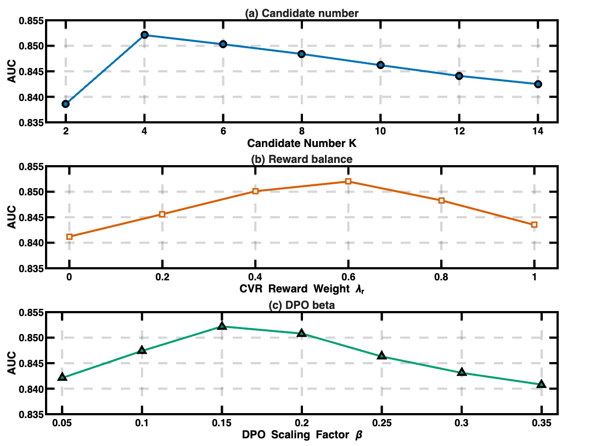
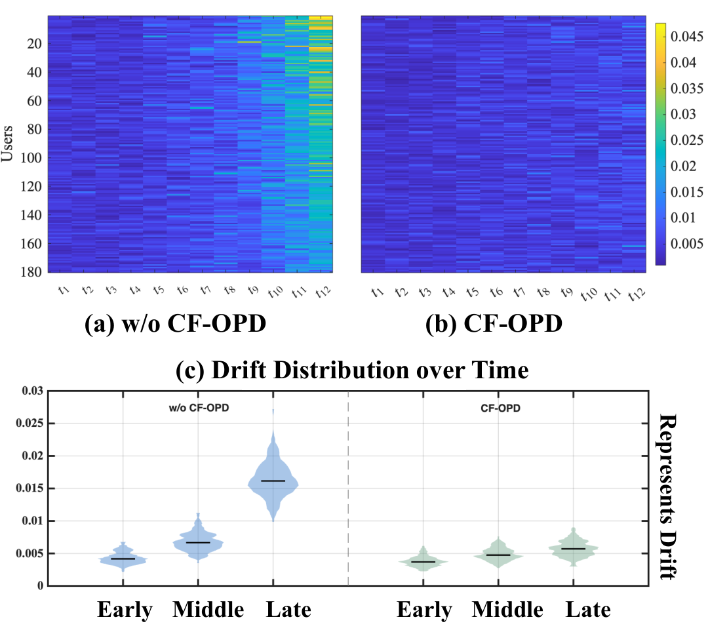

User conversion intent reasoning in lead advertising is severely challenged by the early-stage ambiguity of behavioral trajectories, where static profiles and short-term actions provide sparse, fragmented, and multi-faceted clues. Traditional deep recommendation models fail to fully exploit the continuous temporal dynamics of user intent, whereas Large Language Models (LLMs), despite their superior semantic reasoning, tend to over-balance candidate intents in sparse signal regimes rather than anchoring on decisive conversion paths.
To address this gap, we present FALCON (Flow matching in Advertising scenarios based on Latent Clue Online policy distillatioN), a framework that bridges LLM semantic reasoning and continuous intent trajectory modeling. FALCON first reformulates LLM-generated user narratives into structured, partitioned XML segments and aggregates them via a query-key-value attention mechanism using static profiles as personalized anchors. Treating intent evolution as a continuous probability flow, FALCON pre-trains a Flow Matching Teacher over 30-day user trajectories. The teacher utilizes FalconNet — a Diffusion Transformer (DiT) architecture enhanced with AdaLN-Zero conditioning, QK-Norm, and RoPE — to learn a conditional velocity field that dynamically refines ambiguous early-stage embeddings toward conversion-aligned future states.
To avoid inference latency overhead during deployment, FALCON introduces Conversion-aware Flow-refined Online Policy Distillation (CF-OPD), transferring the teacher's dynamic intent reasoning into the LLM student via group-wise advantage estimation and reward-guided post-training. Extensive offline evaluations across multiple backbones on two large-scale industrial advertising datasets, alongside an eight-day online A/B test, demonstrate that FALCON significantly outperforms strong baselines, achieving a +4.310% lift in Conversion Rate (CVR) and a +2.87% increase in platform revenue.

256-dim user embedding reshaped into P patches, each projected to dimension d via linear layer with additive patch-type embeddings.
Zero-initialized gate and output projection layers ensure each DiT block behaves as identity mapping at initialization, enabling stable deep network training.
Query-Key normalization stabilizes attention logits; Rotary Position Embedding injects relative positional information into query and key representations.
Gated linear unit with SiLU activation, with hidden dimension set to 2/3 of standard FFN to match parameter count.
FALCON consistently improves AUC, GAUC, and NDCG@10 across five ranker backbones on two large-scale datasets. Teacher-free pre-training preserves original latency while delivering substantial gains; teacher-based joint training further boosts quality at modest overhead.
| Backbone | Training | AlimamaTech / MAC | EVENT_PRIVATE_MSG | ||||
|---|---|---|---|---|---|---|---|
| AUC | GAUC | NDCG@10 | AUC | GAUC | NDCG@10 | ||
| DeepFM | Ranker-only | 0.7651 | 0.6214 | 0.2837 | 0.6609 | 0.6399 | 0.1895 |
| Teacher-free | 0.7788 | 0.6413 | 0.3138 | 0.6660 | 0.6416 | 0.1940 | |
| Teacher-based | 0.7796 | 0.6421 | 0.3149 | 0.6667 | 0.6420 | 0.1948 | |
| DCNv2 | Ranker-only | 0.7542 | 0.6579 | 0.1940 | 0.6536 | 0.6434 | 0.1694 |
| Teacher-free | 0.8263 | 0.7141 | 0.3687 | 0.6550 | 0.6451 | 0.1770 | |
| Teacher-based | 0.8279 | 0.7150 | 0.3699 | 0.6557 | 0.6454 | 0.1784 | |
| RankMixer | Ranker-only | 0.8355 | 0.7276 | 0.1389 | 0.6757 | 0.6540 | 0.2000 |
| Teacher-free | 0.8445 | 0.7307 | 0.1698 | 0.6809 | 0.6544 | 0.2092 | |
| Teacher-based | 0.8448 | 0.7311 | 0.1694 | 0.6811 | 0.6547 | 0.2099 | |
| TokenMixer | Ranker-only | 0.8426 | 0.7302 | 0.1578 | 0.6793 | 0.6556 | 0.2074 |
| Teacher-free | 0.8509 | 0.7342 | 0.1928 | 0.6841 | 0.6566 | 0.2181 | |
| Teacher-based | 0.8517 | 0.7348 | 0.1936 | 0.6848 | 0.6571 | 0.2189 | |
Table 1 (condensed): Performance of 4 representative backbones on two datasets. Green cells indicate improvement over the ranker-only baseline. Teacher-free mode preserves serving latency; bold values mark the overall best.
| Foundation Model | Strategy | AUC | GAUC | NDCG@10 |
|---|---|---|---|---|
| keye-1.5-8B | Direct | 0.8342 | 0.7248 | 0.1516 |
| CF-OPD + Teacher Only | 0.8376 | 0.7241 | 0.1568 | |
| CF-OPD + CVR Reward | 0.8401 | 0.7289 | 0.1642 | |
| qwen3-8B | Direct | 0.8346 | 0.7249 | 0.1528 |
| CF-OPD + Teacher Only | 0.8378 | 0.7250 | 0.1562 | |
| CF-OPD + CVR Reward | 0.8403 | 0.7296 | 0.1647 | |
| qwen3.5-30B | Direct | 0.8390 | 0.7281 | 0.1802 |
| CF-OPD + Teacher Only | 0.8427 | 0.7275 | 0.1849 | |
| CF-OPD + CVR Reward | 0.8517 | 0.7348 | 0.1936 |
Table 2: CF-OPD with different foundation models under a fixed TokenMixer ranker. CF-OPD + CVR Reward consistently achieves the strongest results — Flow-refined alignment transfers temporal knowledge, while CVR reward steers representations toward conversion objectives.

| Method | AUC | CVR Lift | Revenue Lift |
|---|---|---|---|
| Base (LLM Embedding) | +0.05% | +2.219% | +1.23% [0.85, 1.61] |
| FALCON (Ours) | +0.12% | +4.310% | +2.87% [2.41, 3.33] |
| Variant | AUC | Δ | NDCG@10 |
|---|---|---|---|
| Full FALCON | 0.8517 | — | 0.1936 |
| w/o XML partitioning | 0.8479 | −0.0038 | 0.1874 |
| w/o attention fusion | 0.8468 | −0.0049 | 0.1859 |
| w/ static query (no profile anchor) | 0.8492 | −0.0025 | 0.1896 |
| Variant | AUC | Δ | NDCG@10 |
|---|---|---|---|
| Full FM (all objectives) | 0.8517 | — | 0.1936 |
| w/o endpoint loss | 0.8195 | −0.0322 | 0.1546 |
| w/o time weighting | 0.8241 | −0.0276 | 0.1598 |
| w/o EMA smoothing | 0.8306 | −0.0211 | 0.1669 |



Identified early-stage core intent anchoring as a key bottleneck in lead advertising, where LLMs over-balance multiple plausible intents while traditional recommenders are limited in exploiting rich behavioral trajectories.
Proposed a time-conditioned Flow Matching teacher (FalconNet) to capture core-intent trajectories from 30-day behavior sequences, and CF-OPD — a CVR-guided policy post-training mechanism — to distill this reasoning into a deployable LLM student.
Extensive offline experiments across 5 backbone rankers on 2 large-scale datasets and a successful 8-day online A/B test confirming +4.310% CVR and +2.87% revenue gains while keeping the serving path teacher-free.
@inproceedings{falcon2027,
title = {FALCON: Flow Matching Guided LLMs to Capture Intent Clues},
author = {Anonymous Author(s)},
booktitle = {Proceedings of the 20th ACM International Conference on
Web Search and Data Mining (WSDM '27)},
year = {2027},
location = {Cordis, Hong Kong},
publisher = {ACM},
doi = {To appear}
}